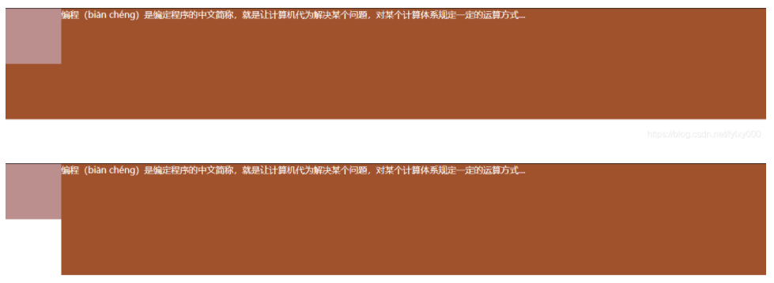

伪类和伪元素
css3为了区分伪类和伪元素，伪元素采用双冒号写法
- 常见伪类 :hover, :link, :active, :target, :not(), :focus。
- 常见伪元素 ::first-letter, ::first-line, ::before, ::after, ::selection。
::after和::before
::before和::after下特有的content，用于在css渲染中向元素逻辑上的头部或尾部添加内容。
这些添加不会出现在DOM中，不会改变文档内容，不可复制，仅仅是在css渲染层加入。
所以不要用:before或:after展示有实际意义的内容，尽量使用它们显示修饰性内容，例如图标。
<style type="text/css">
.phoneNumber::before {
content: '\260E';
font-size: 15px;
}
</style>
<p class="phoneNumber">12345645654</p>
运行结果：
content属性
::before和::after必须配合content属性来使用，content用来定义插入的内容，content必须有值，至少是空。默认情况下，伪类元素的display是默认值inline，可以通过设置display:block来改变其显示。 content可以取以下值
1、String
<style type="text/css">
p::before{
content: "《";
color: blue;
}
p::after{
content: "》";
color: blue;
}
</style>
<p>平凡的世界</p>
运行结果：《平凡的世界》
2、attr()
通过attr()调用当前元素的属性，比如将图片alt提示文字或者链接的href地址显示出来
<style type="text/css">
a::after{
content: "(" attr(href) ")";
}
</style>
<a href="http://www.cnblogs.com/starof">starof</a>
运行结果：starof（http://www.cnblogs.com/starof）
3、url/uri()
用于引用媒体文件，例如“百度”前面给出图片，后面给出href属性
<style>
a::before{
content: url("https://www.baidu.com/img/baidu_jgylogo3.gif");
}
a::after{
content:"("attr(href)")";
}
</style>
<a href="http://www.baidu.com">百度</a>
运行结果： 百度(https://www.baidu.com/img/baidu_jgylogo3.gif)
百度(https://www.baidu.com/img/baidu_jgylogo3.gif)
使用
1、清楚浮动
.row:after {
width:0;
height:0;
content:'';
display: block;
clear: both;
}
2、绘制图形效果
<style>
#star-six {
width: 0;
height: 0;
border-left: 50px solid transparent;
border-right: 50px solid transparent;
border-bottom: 100px solid red;
position: relative;
}
#star-six::after {
width: 0;
height: 0;
border-left: 50px solid transparent;
border-right: 50px solid transparent;
border-top: 100px solid red;
position: absolute;
content: "";
top: 30px;
left: -50px;
}
</style>
<body>
<div id="star-six"></div>
</body>

:before和::before的区别
- 相同点
- 都可以用来表示伪类对象，用来设置对象前的内容
- :befor和::before写法是等效的
- 不同点
- :befor是Css2的写法，::before是Css3的写法
- :before的兼容性要比::before好 ，不过在H5开发中建议使用::before比较好
- 其它
- 伪类对象要配合content属性一起使用
- 伪类对象不会出现在DOM中，所以不能通过js来操作，仅仅是在 CSS 渲染层加入
- 伪类对象的特效通常要使用:hover伪类样式来激活
.test:hover::before { /* 这时animation和transition才生效 */ }
相关样式
布局
常见五大布局
详细代码解析：css常见的五大布局
不知道什么类的
BFC规范及应用
BFC即Block Formatting Contexts (块级格式化上下文)，是W3CCSS2.1规范中的一个概念。它是页面中的一块渲染区域，并且有一套渲染规则， 它决定了其子元素将如何定位，以及和其他元素的关系和相互作用。具有BFC特性的元素可以看作是隔离了的独立容器，容器里面的元素不会在布局上影响到外面的元素，并且BFC具有普通容器所没有的一些特性。
特性
1、内部的Box会在垂直方向，从顶部开始一个接一个地放置。
2、Box垂直方向的距离由margin决定。属于同一个BFC的两个相邻Box的margin会发生重叠。
3、在BFC中，每一个盒子的左外边缘（margin-left）会触碰到容器的左边缘(border-left)（对于从右到左的格式来说，则触碰到右边缘），即使存在浮动也是如此。
4、BFC的区域不会与float box叠加。
5、BFC就是页面上的一个隔离的独立容器，容器里面的子元素不会影响到外面的元素，反之亦然。
6、计算BFC的高度时，浮动元素也参与计算。
如何触发BFC
- 浮动元素：float除none以外的值（left,right）
- 绝对定位元素：position（absolute，fixed）
- display为inline-block、table-cells、flex
- overflow除了visible以外的值（hidden，auto，scroll）
BFC规范的应用
1、margin叠加问题
<style>
.div1{
width: 100px;
height: 100px;
background: fuchsia;
margin-bottom: 20px;
}
.div2{
width: 100px;
height: 100px;
background: yellowgreen;
margin-top: 20px;
}
.box{
/* 触发BFC，解决margin叠加问题 */
overflow: hidden;
}
</style>
<div class="box">
<div class="div1"></div>
</div>
<div class="box">
<div class="div2"></div>
</div>
触发BFC后，margin由触发前（margin叠加）的20px变为了40px
2、margin传递问题
<style>
.wrap{
width: 100px;
height: 100px;
background: yellowgreen;
/* 触发BFC */
/* overflow: hidden; */
position: absolute;
}
.content{
width: 50px;
height: 50px;
background: rebeccapurple;
/* margin传递，影响父容器 */
margin-top: 30px;
}
</style>
<div class="wrap">
<div class="content"></div>
</div>
左图触发前，右图触发后，触发前外盒子跟着内盒子一起增加margin
3、浮动问题
<style>
.div1{
width: 200px;
border: 10px solid blue;
/* 触发BFC */
float: left;
/* display: inline-block; */
/* overflow: hidden; */
}
.div2{
width: 100px;
height: 100px;
background: red;
float: left;
}
</style>
<div class="div1">
<div class="div2"></div>
</div>
左图触发前，右图触发后，内部盒子浮动脱离文档，内部盒子宽高跟不上
4、覆盖问题
<style>
.div3{
width: 100px;
height: 100px;
background: rosybrown;
/* 浮动影响了div4 */
float: left;
}
.div4{
height: 200px;
background: sienna;
color: #fff;
/* 触发BFC */
overflow: hidden;
/* float: left; */
}
</style>
<div class="div3"></div>
<div class="div4">编程（biān chéng）是编定程序的中文简称，就是让计算机代为解决某个问题，对某个计算体系规定一定的运算方式...</div>
上图触发前，下图触发后，实现了左边固定宽度，右边自适应的布局

参考：BFC规范及应用
优雅降级和渐进增强
渐进增强 progressive enhancement：针对低版本浏览器进行构建页面，保证最基本的功能，然后再针对高级浏览器进行效果、交互等改进和追加功能达到更好的用户体验。
优雅降级 graceful degradation：一开始就构建完整的功能，然后再针对低版本浏览器进行兼容。
前缀CSS3（-webkit- / -moz- / -o-*）和正常CSS3在浏览器中的支持情况是这样的：
- 很久以前：浏览器前缀CSS3和正常CSS3都不支持；
- 不久之前：浏览器只支持前缀CSS3，不支持正常CSS3；
- 现在：浏览器既支持前缀CSS3，又支持正常CSS3；
- 未来：浏览器不支持前缀CSS3，仅支持正常CSS3。
示例
<div class="not-a-square"></div>
/* 渐进增强 */
.not-a-square {
width: 300px;
height: 80px;
background: lightblue;
-webkit-border-radius: 30px 10px;
border-radius: 30px 10px;
}
/* 优雅降级 */
.not-a-square {
····
border-radius: 30px 10px;
-webkit-border-radius: 30px 10px;
}
按理说这两种写法效果应该是一样的，但是我们现在浏览器停留第三阶段，既支持前缀写法，又支持正常写法，这样就要出问题了。当属性超过一个参数值的时候，不同属性产生的作用是不一样的！可以看到，采用优雅降级的写法，如果一个浏览器同时支持前缀写法和正常写法，后面的旧版浏览器样式（带兼容前缀）就覆盖了新版样式，出现一些奇怪的问题 ，但是用渐进增强的写法就不存在这个问题。所以为了避免这个不必要的错误，建议大家都采用渐进增强的写法。
题库
问题
在页面上隐藏元素的方法有哪些
- 占位:
visibility: hidden; 页面会渲染只是不显示。
margin-left: -100%;
opacity: 0; 页面渲染，占据空间，引起重绘。
transform: scale(0);
z-index: -9999999999999
position: relative; left: -100% - 不占位:
display: none; 页面不会渲染，可以减少首屏渲染的时间，但是会引起回流和重绘。
width: 0; height: 0; overflow: hidden; - 仅对块内文本元素:
text-indent: -9999px;
font-size: 0;
清除浮动的方法
<div class="div1">
<div class="div2" style="float: left></div>
</div>
1、 父级高度固定时直接设置height。
.div1 {height: 100px;}
2、 结尾处加空div标签 clear: both; 浮动布局多，则需要增加很多空的div。
<div style="clear: both;"></div>
3、 触发BFC，父级定义 overflow: hidden;或者display: inline-block; 详见2.1.3。
4、给父级元素增加伪类after
.div1:after {
content: '';
height: 0;
line-height: 0;
display: block;
visibility: hidden;
clear: both;
}
5、 使用双伪类
.div1:after, .div1:before {
content: "";
display: block;
clear: both;
}
6、 父级定义display: table; 容易引起其他布局问题，不推荐
.div1 {display: table;}
style标签写在body前与写body后有什么区别
1、写在body标签前利于浏览器逐步渲染
resources downloading->CSSOM+DOM->RenderTree(composite)->Layout->paint
2、写在body标签后
由于浏览器以逐行方式对html文档进行解析，当解析到写在尾部的样式表（外联或写在style标签）会导致浏览器停止之前的渲染，等待加载且解析样式表完成之后重新渲染，在windows的IE下可能会出现FOUC现象（即样式失效导致的页面闪烁问题）；
编程
圣杯布局和双飞翼布局
作用：
圣杯布局和双飞翼布局解决的问题是相同的，就是两边顶宽，中间自适应的三栏布局，中间栏要在放在文档流前面以优先渲染。
区别：
圣杯布局：为了让中间div内容不被遮挡，将中间div设置了左右padding-left和padding-right后，将左右两个div用相对布局position: relative并分别配合right和left属性，以便左右两栏div移动后不遮挡中间div。
双飞翼布局：为了让中间div内容不被遮挡，直接在中间div内部创建子div用于放置内容，在该div里用margin-left和margin-right为左右两栏div留出位置。
圣杯布局
优点：不需要添加dom节点
缺点：圣杯布局的缺点：正常情况下是没有问题的，但是特殊情况下就会暴露此方案的弊端，如果将浏览器无线放大时，「圣杯」将会「破碎」掉。如图：当middle部分的宽小于left部分时就会发生布局混乱。（middle<left即会变形）
<!DOCTYPE html>
<html>
<head>
<meta charset="utf-8" />
<title>圣杯布局</title>
<style>
#bd{
padding: 0 200px 0 180px;
height: 100px;
}
#middle{
float: left;
width: 100%;
height: 500px;
background:blue;
}
#left{
float:left;
width:180px;
height:500px;
margin-left:-100%;
background: #0c9;
position: relative;
left: -180px;
}
#right{
float: left;
width: 200px;
height: 500px;
margin-left: -200px;
background: #0c9;
position: relative;
right: -200px;
}
</style>
</head>
<body>
<div id="bd">
<div id="middle">middle</div>
<div id="left">left</div>
<div id="right">right</div>
</div>
</body>
</html>
双飞翼布局
优点：不会像圣杯布局那样变形
缺点是：多加了一层dom节点
<!DOCTYPE html>
<html>
<head>
<meta charset="UTF-8">
<title>双飞翼布局</title>
<style>
#center{
float:left;
width:100%;
height:100px;
}
#inside{
margin:0 200px 0 180px;
height:100px;
background:blue;
}
#left{
float:left;
width:180px;
height:100px;
margin-left:-100%;
background:#0c9;
}
#right{
float:left;
width:200px;
height:100px;
margin-left:-200px;
background:#0c9;
}
</style>
</head>
<body>
<div id="center">
<div id="inside">middle</div>
</div>
<div id="left">left</div>
<div id="right">right</div>
</body>
</html>
position:fixed在ios下失效
在ios下，头部或底部采用固定定位时，滑动中心部分时整个页面都跟着滚动也就是说固定定位失效了。
<div class="header></div>
<div class="contain></div>
<div class="footer></div>
.header {
position: fixed;
top:0;
left: 0;
right:0;
height:100px;
}
.footer {
position: fixed;
bottom: 0;
left: 0;
right:0;
height: 30px;
}
.main{
/*main绝对定位，进行内部滚动，似乎用fixed也可以*/
position: absolute;
/*top是头部的高度*/
top: 100px;
/*bottom是底部的高度*/
bottom: 30px;
/*使之可以滚动*/
overflow-y: scroll;
/*增加弹性滚动,解决滚动不流畅的问题*/
-webkit-overflow-scrolling: touch;
}